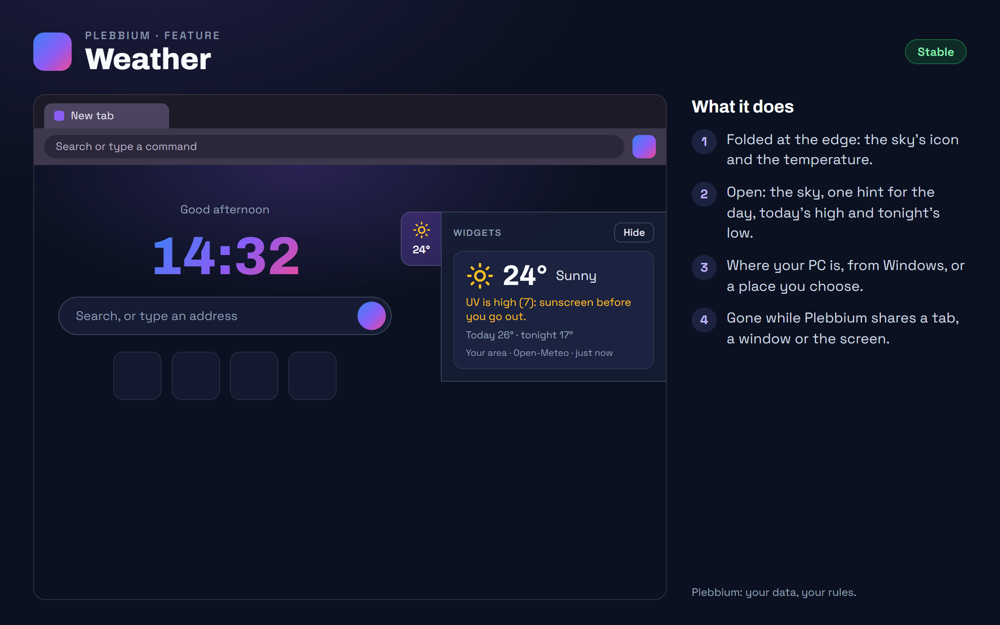

All features › Shipped › Weather
Weather
Stablesince 3617The new tab's weather, in a strip at its right edge: folded to the sky and the temperature, open with a short hover or a click, with one hint for the day - sunscreen, an umbrella or a jacket. It hides by itself while Plebbium shares a tab, a window or the screen.

How to use it
- Look: rest the mouse on the edge of the new tab, or click it. Moving away, Escape or › folds it.
- Put it away: Hide on the strip. Bring it back: Plebbium settings › Widgets, or Customize on the new tab.
- Where it is for: Plebbium settings › Widgets › Weather for - this PC (from Windows), or a place you choose.
- °C or °F: Plebbium settings › Widgets.
When it arrived
156.0.8078.36177 Nov 2026 · Beta and Stable
The weather on the new tab, in a widgets strip, hidden while sharing.
Why it works this way
Folded until you look
The weather is useful at a glance and in the way the rest of the time, so it waits at the edge.
Gone while you share
The weather can say where you are. While Plebbium shares a tab, a window or the screen, the strip disappears, with nothing in its place.
No account, no key
The forecast comes from Open-Meteo, which needs no account. Only rough coordinates, about 10 km, leave your PC, never your town's name, and with the weather off nothing is asked at all.